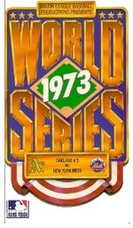

| Home Page | 1969 | 1986 | 2000 | 2015 |

The 1973 World Series was the second of 5 that the New York Mets have reached over the course of their exhistence. Despite being tied 3 games to 3 going into the 7th game, the Mets ended up dropping the last game 2-5. The series was very back-and-forth, as the teams alternated wins going up to the 5th game, where the Mets actually led the series 3-2. However, in a pitching duel in game 6, the momentum shifted, which ultimately led to the A's winning the last two games of the series.